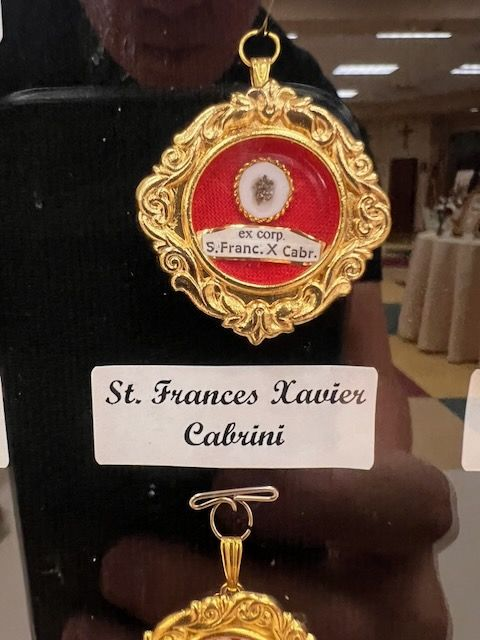

The label is in Latin
Saint Frances Xavier Cabrini, from the body
On the label
ex corp.S. Franc. X. Cabr.St. Frances Xavier Cabrini
In English
From the body of Saint Frances Xavier Cabrini.
Saints named
ex corp. is ex corpore, from the body.